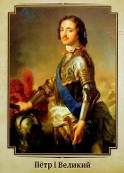

Владимир Святославич

Пётр I Великий (1672–1725 гг.) – выдающийся государственный деятель, московский царь из династии Романовых, всероссийский император с 1721 года, великий реформатор. При нём Россия стала Российской империей и в государстве произошли глобальные и важные изменения.
Приход к власти.
В 1682 году, после смерти Фёдора Алексеевича, 10-летний Петр и его брат Иван были провозглашены царями.